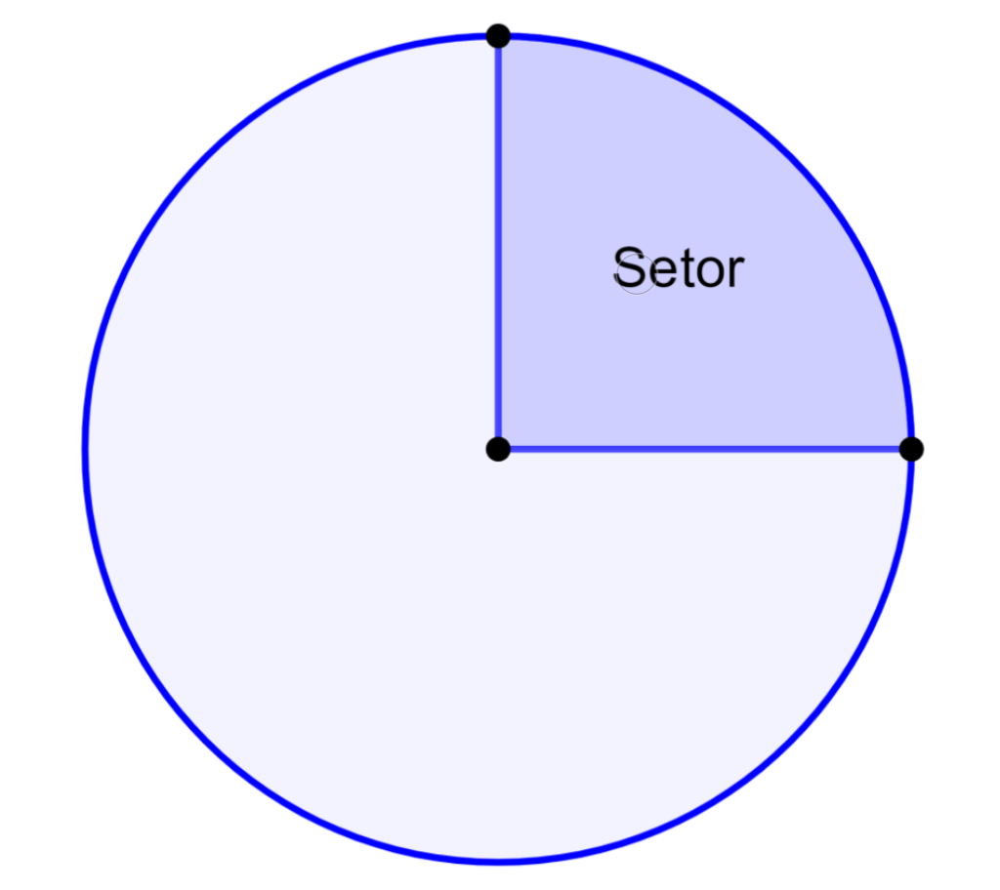

Um setor circular em um círculo aninhado é uma figura geométrica que surge quando um
círculo menor está localizado dentro de um círculo maior. Este setor é uma parte da
região entre os dois círculos e compartilha a mesma origem no centro. Aqui estão
informações detalhadas sobre um setor circular em um círculo aninhado:
Definição:
- Um setor circular em um círculo aninhado é uma área delimitada por um arco de círculo
e dois raios que partem do centro do círculo maior e conectam-se ao ponto onde o arco
do círculo se encontra com o círculo menor.

Elementos Principais:
- O círculo maior é chamado de círculo externo, e o círculo menor é o círculo interno.
- O arco de círculo que forma o setor é uma parte da circunferência do círculo externo.
- Os dois raios que delimitam o setor conectam o centro do círculo externo ao ponto
de interseção com o círculo interno.
Medida do Ângulo do Setor:
- A medida do ângulo do setor é determinada pela relação entre o comprimento do arco
de círculo e o raio do círculo externo. Isso pode ser calculado usando a fórmula: Ângulo do
Setor = (Comprimento do Arco / Raio do Círculo Externo).
Área do Setor:
- A área do setor é calculada com base na medida do ângulo do setor e o raio do círculo
externo. A fórmula é: Área do Setor = (Ângulo do Setor / 360°) × π × (Raio do Círculo Externo)².
Perímetro do Setor:
- O perímetro do setor é a soma do comprimento do arco de círculo e a soma dos comprimentos
dos dois raios que delimitam o setor.
Usos Práticos:
- Setores circulares em círculos aninhados são comuns em engenharia, design, arquitetura e gastronomia,
onde podem representar áreas de interesse, como jardins circulares dentro de pátios maiores ou
áreas de plantio em um campo agrícola ou para um exemplo mais cotidiano e simples, em uma pizza.
Relações com Outras Figuras Geométricas:
- Os setores circulares também podem ser vistos como partes de um círculo maior. Eles podem ser usados em
cálculos de áreas e ângulos em geometria.